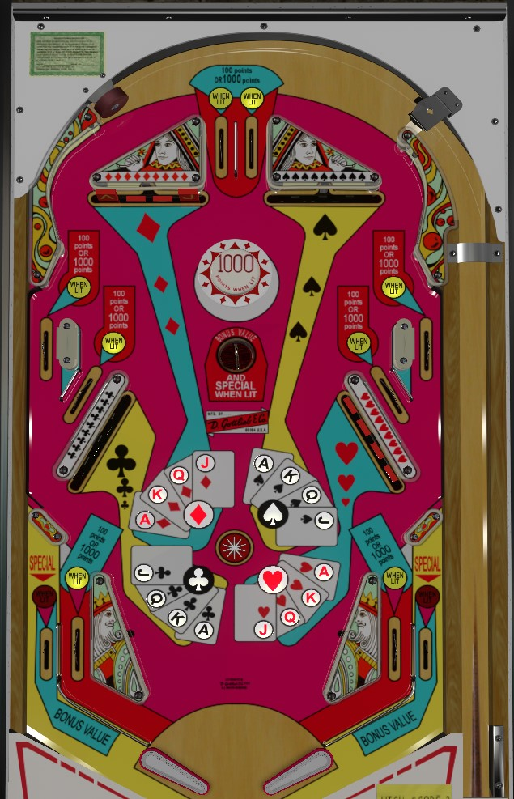

High Hand is the replay version. Capt. Card is the add-a-ball version for domestic sale in the USA. Top Hand is the add-a-ball version exported to Italy. Rules changes between the games are minimal and discussed as they are relevant throughout the guide.
Complete banks of drop targets. The bonus score is equal to 100 points per drop target down, unless you've cleared all 4 targets in one suit, in which case those four targets contribute 1,000 each to bonus instead. Bonus is only collectible at the center saucer or the out lanes; center drains do not award bonus. Clearing all 16 drop targets lights the out lanes and center hole for Special or Wow depending on the version of the game. On Capt. Card and Top Hand, all drop targets and bonus progress reset if the ball drains with all 16 drop targets down, so take advantage of extra balls and big points while you can.
The below picture is of High Hand, which was taken from the VPX recreation by Loserman76.
There are 4 banks of drop targets in the game: diamonds in the upper left, spades in upper right, clubs in lower left, hearts in lower right. Each bank has 4 targets: an ace, a king, a queen, and a jack. Any drop target down scores 500 points and lights the corresponding card in the center of the playfield. Slow EM scoring is at play here: if you hit multiple targets down at once, or if a very fast ricochet knocks the ball from one target into another, you'll get credit for knocking both down in the center of the playfield, but you'll only get the 500 points for one of them.
As far as hitting targets goes: the innermost diamonds and spades target cannot be hit with a conventional forehand shot due to the game's pop bumper, but these targets should be able to be backhanded on a well-maintained copy of the game.
The bonus value is calculated as 100 points per lit card in the center of the playfield, or 1,000 points per card for suits that have had all 4 drop targets cleared. That's a maximum value of 16,000 points if all drop targets are down, but only a few hundred points early in the game. The bonus value is collected only at the center saucer and the out lanes. Flippers on High Hand +friends are usually too strong to allow a direct shot at the saucer to settle there on the fly; a ricochet shot is needed, usually from one flipper off the opposite slingshot or part of the hearts or clubs drop target structure. Avoid a center drain at all costs, as it does not score your bonus value: okay, maybe not at all costs, because tilt ends game on High Hand, and tilt costs you one ball plus the ball in play on Capt. Card and Top Hand.
Completing all 4 banks of drop targets lights neat stuff around the game.
On High Hand, either the center saucer or the out lanes will be lit for Special, alternating each time the pop bumper is hit. One of the two will be lit for the rest of the game.
On Capt. Card and Top Hand, both the center saucer and the out lanes will be lit for Wow, which scores 1 extra ball. If the ball in play drains while Wow is lit, all drop targets will reset for the next ball in play, which unlights the Wows and removes all progress on the bonus value.
Specials and Wows are awarded in addition to, rather than instead of, the 16,000 point bonus value.
On High Hand, there is just one star rollover in the center of the table, and it always seems to be worth 10 points. On Capt. Card and Top Hand, there are 4 star rollovers in the center, which score 10 points when not lit and 100 points when lit; they light when all four targets of the nearest suit have been knocked down.
Completing the diamonds, clubs, hearts, and spades suits light the vertical left side lane, the slanted left side lane, the slanted right side lane, and the vertical right side lane respectively. Rollover lanes score 100 points when not lit or 1,000 points when lit.
Top lanes score 100 points, or 1,000 when lit. One of the two is always lit, alternating each time the pop bumper is triggered. The pop bumper scores 1,000 points; however, no points will register if the pop bumper was hit while the game was counting off the 500 points from a downed drop target. If the ball goes through one of the top lanes, it will usually bounce off the pop bumper and collect the jack of diamonds or ace of spades target for free.
High Hand and friends have a conventional in/out lane setup. In lanes score 100 points or 1,000 when lit, and alternate whenever the pop bumper is hit, just like the top lanes. Out lanes score the current bonus value, and can be lit for Special/Wow by completing all 16 drop targets. Slingshots score 10 points.
There is no bonus multiplier. There are no ways to earn an extra ball on High Hand, and there are no ways to earn a free game on Capt. Card or Top Hand. Being a 1-player game, all card progress carries from ball to ball, except on Capt. Card and Top Hand where all drop targets reset if the ball drains once all 4 banks are completed. Capt. Card and Top Hand can store up to 10 balls remaining.
Tilt ends game on High Hand. Tilt ends the current ball and forfeits one additional ball on Capt. Card and Top Hand.